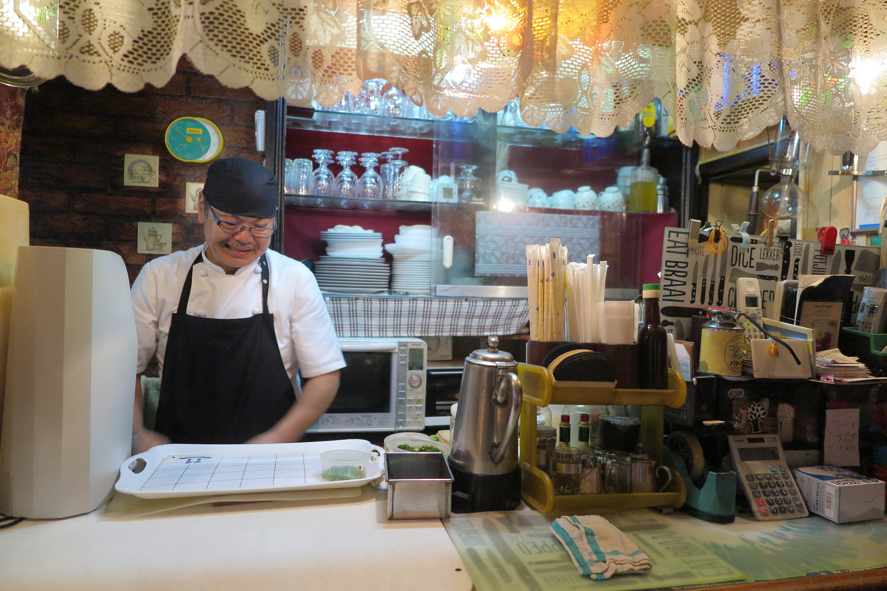
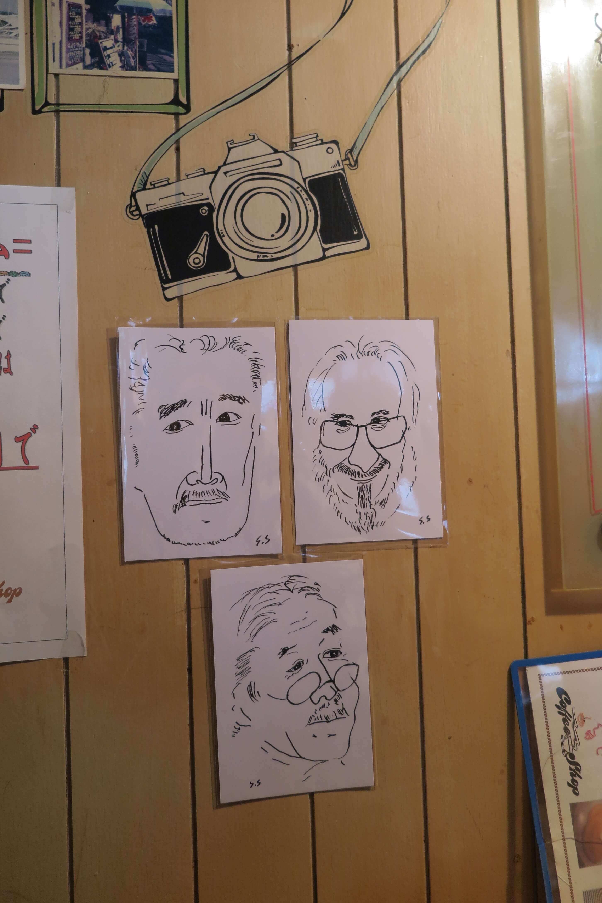
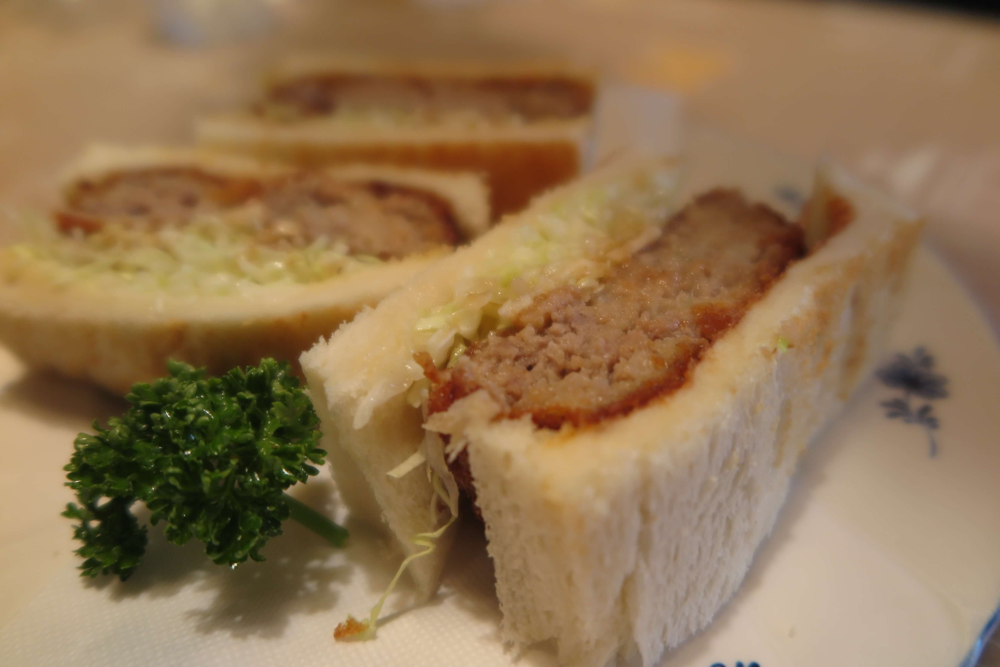
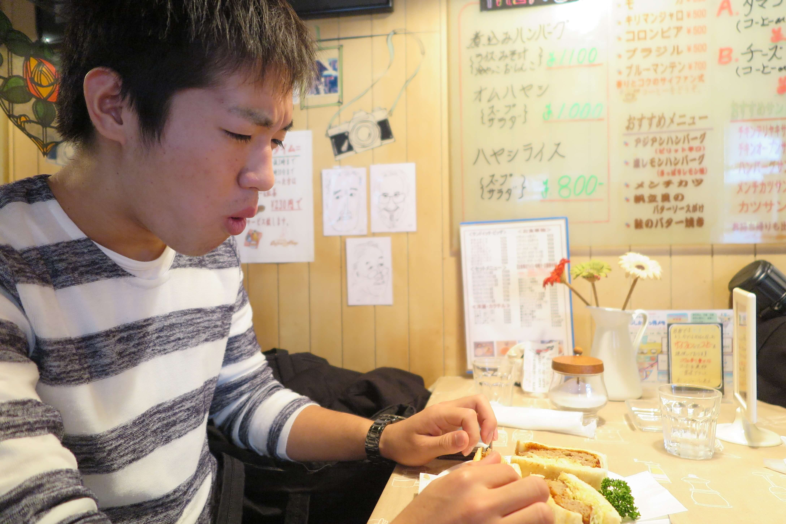

さあさあみなさん

第一弾はイタリアンでしたが今回は．．．
なんだか看板だけでレトロな雰囲気感じません？

うーん，，
なんて言ったらいいんだろう，
このジブリ映画に出てきそうなすごく落ち着いた80年代みたいな雰囲気すごくいい（笑）
そしてそして．．．
ボリューム満点の生姜焼き！この甘辛な味付けがたまらない．
んー，デザートが食べたい！
ちょっとした甘味処でもあるんです．
金町駅北口から歩くこと10分弱，Café Bonjourは1979年にご夫婦でオープンしたという創業37年の老舗の喫茶店．
ご主人によると，もともとはイタリアンかメキシカンのお店をやりたかったものの，お店が狭かったために喫茶店としてオープンすることを決断したとのこと．サイフォンで淹れるコーヒーはこだわりの逸品です．
 こちらがご主人．店内には似顔絵も．
取材の30分も前に入店した我々取材班，我慢できずに注文しちゃいました．
この日はやや体調不良かつ取材前でがちがちに緊張するインタビュアー高橋．思わず目を細めます．さてさて参りましょう．
